ECCV 2026
Get in touch with us at behavior-in-the-wild@googlegroups.com
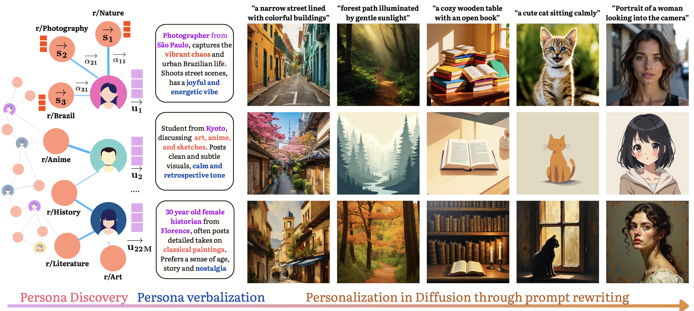
Text-to-image diffusion models are increasingly deployed in creative contexts, yet remain impersonal — optimized for aggregate aesthetics rather than individual taste. Human preferences are also pluralistic: the same person may want muted, nostalgic portraits but vibrant, saturated street photography. Existing methods need dense interaction histories or per-user fine-tuning, fail in cold-start settings, and collapse each user's context-dependent preferences into one static style. We introduce zero-shot image personalization from personas (ZIPP), which conditions generation on natural-language personas — concise descriptors of a user's identity, interests, and aesthetic sensibilities — with no user-specific data and no weight updates. An LLM roleplays the persona to rewrite prompts, steering a frozen diffusion model toward taste-aligned outputs.
ZIPP turns large-scale behavior into reusable, interpretable personas, then uses them to steer any diffusion model through prompt rewriting.
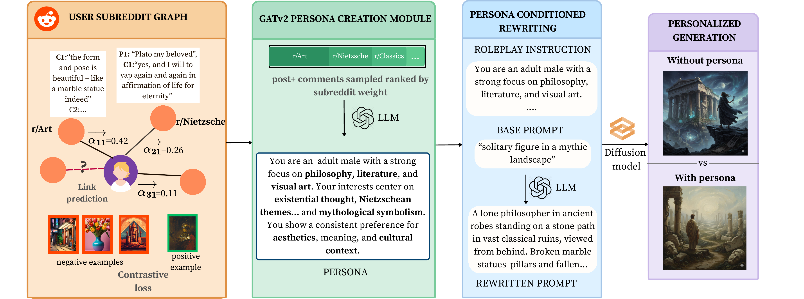
A user–subreddit bipartite graph is built from Reddit. A two-layer GATv2 encoder is trained with link prediction and an ImageAlign contrastive objective that ties graph structure to users' visual posting behavior.
Learned attention weights rank each user's subreddits by behavioral salience, allocating a fixed token budget to the communities and comment snippets that most characterize their interests.
An MLLM verbalizes the attention-guided evidence into a rich, editable natural-language persona capturing demographics, interests, and affective traits.
The persona is prepended as a first-person roleplay instruction; an LLM rewrites the prompt from that perspective, conditioning a frozen diffusion model to generate personalized images.
We evaluate ZIPP across four benchmarks — ZIPBench and PIP (historical generations), MovieLens and RapidData (preference pairs) — against zero-shot, few-shot, and fine-tuned baselines. We report CLIPScore (CS) and PIGReward (PIG) for personalization quality, a demographically IPF-normalized aggregate, and CMMD for pluralistic diversity (lower is better).
Unified evaluation across all benchmarks, demographic alignment, and pluralism. CS = CLIPScore, PIG = PIGReward (both ×100, higher is better); CMMD ↓ measures distributional divergence from the user's true preference space. All prompt-rewriting methods use GPT-4o as the underlying LLM.
| Method | ZIPBench | PIP | MovieLens | RapidData | Demog. | CMMD↓ | |||||
|---|---|---|---|---|---|---|---|---|---|---|---|
| CS | PIG | CS | PIG | CS | PIG | CS | PIG | CS | PIG | ||
| GPT-4o (0-shot) | 59.1 | 65.3 | 57.7 | 61.4 | 73.7 | 58.5 | 67.3 | 56.0 | 66.9 | 55.1 | 0.49 |
| ZIPP (0-shot) | 61.8 | 73.4 | 60.2 | 67.3 | 76.4 | 64.2 | 73.9 | 61.5 | 72.8 | 60.9 | 0.42 |
| FABRIC (1-shot) | — | — | 63.7 | — | 75.1 | — | — | — | — | — | — |
| TV (3-shot) | 62.4 | 72.0 | 63.1 | 66.5 | 80.1 | 68.7 | 77.4 | 65.3 | 73.8 | 60.1 | 0.25 |
| ZIPP (3-shot) | 66.7 | 77.5 | 65.2 | 69.9 | 80.4 | 71.4 | 77.9 | 68.2 | 76.8 | 67.0 | 0.19 |
| DrUM (FT) | 65.6 | 74.4 | 66.9 | 68.0 | 72.8 | 66.2 | 70.3 | 63.5 | 64.7 | 56.8 | 0.31 |
| ViPer (FT) | — | — | — | — | 76.1 | 70.5 | 74.1 | 63.1 | 73.7 | 60.8 | 0.55 |
| ZIPP 5-shot | 68.5 | 82.8 | 66.3 | 72.1 | 80.9 | 77.9 | 78.3 | 74.0 | 77.4 | 73.0 | 0.16 |
Even zero-shot, ZIPP surpasses the fine-tuned DrUM baseline on three of four benchmarks; few-shot ZIPP leads across all benchmarks on both metrics while achieving the lowest CMMD (0.16) — simultaneous personalization quality, demographic equity, and pluralistic diversity. See full results in the paper →
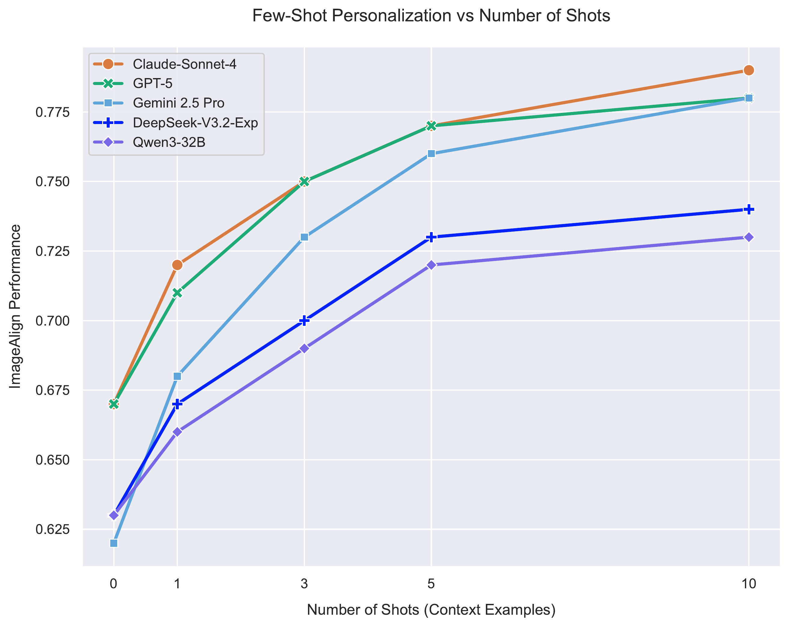
Zero-shot CLIPScore on ZIPBench without vs. with persona conditioning across 14 LLMs from five families. Persona conditioning helps every model (+3% to +20%), with frontier models gaining the most.
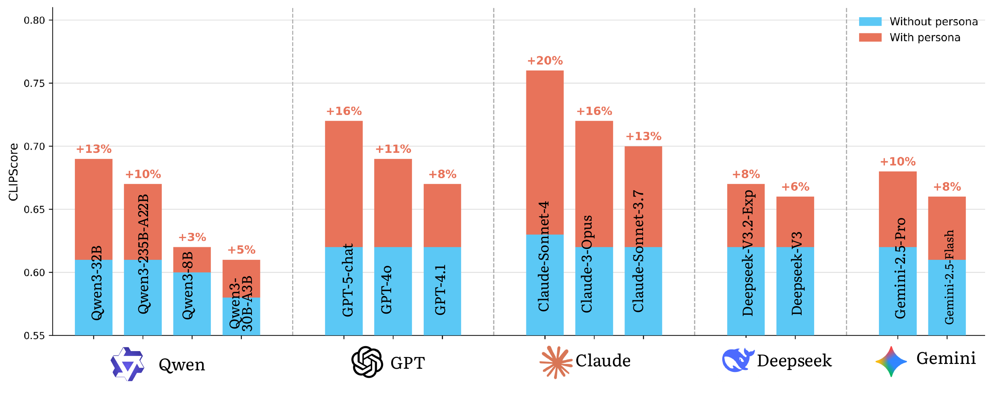
| Model | Family | Without Persona | With Persona | Lift |
|---|---|---|---|---|
| Claude-Sonnet-4 | Frontier | 0.63 | 0.76 | +20% |
| GPT-5-chat | Frontier | 0.62 | 0.72 | +16% |
| Claude-3-Opus | Frontier | 0.62 | 0.72 | +16% |
| Qwen3-32B | Open-source | 0.61 | 0.69 | +13% |
| Claude-Sonnet-3.7 | Frontier | 0.62 | 0.70 | +13% |
| GPT-4o | Frontier | 0.62 | 0.69 | +11% |
| Qwen3-235B-A22B | Open-source | 0.61 | 0.67 | +10% |
| Gemini 2.5 Pro | Frontier | 0.62 | 0.68 | +10% |
| GPT-4.1 | Frontier | 0.62 | 0.67 | +8% |
| DeepSeek-V3.2-Exp | Open-source | 0.62 | 0.67 | +8% |
| Gemini 2.5 Flash | Frontier | 0.61 | 0.66 | +8% |
| DeepSeek-V3 | Open-source | 0.62 | 0.66 | +6% |
| Qwen3-30B-A3B | Open-source | 0.58 | 0.61 | +5% |
| Qwen3-8B | Open-source | 0.60 | 0.62 | +3% |
Persona conditioning is a consistent, training-free win across model families. Frontier models benefit most, consistent with their stronger instruction-following and roleplay ability. See full results in the paper →
Persona-mining encoder ablation (all paired with GPT-4o). Posting accuracy measures how well learned embeddings predict held-out user–subreddit links; ZIP Lift is the downstream zero-shot personalization gain. The GAT + ImageAlign objective produces the most behavior-predictive personas.
| Encoder | Posting Acc ↑ | ZIP Lift ↑ |
|---|---|---|
| TF-IDF | 55% | +5.1% |
| TF-IDF + NMI | 57% | +5.3% |
| LightGCN | 59% | +6.2% |
| LightGCN + ImageAlign | 62% | +9.1% |
| GraphSAGE | 63% | +8.5% |
| GraphSAGE + ImageAlign | 67% | +10.2% |
| GAT | 62% | +11.8% |
| GAT + ImageAlign Ours | 73% | +17.7% |
Attention beats TF-IDF heuristics, and the auxiliary ImageAlign objective improves every architecture by 3–11% ZIP Lift — grounding embeddings in visual posting behavior captures persona signal unavailable from graph structure alone. See full results in the paper →
Demographic equity on RapidData (the only benchmark with anonymized group-level demographics). We compare the raw aggregate against an IPF-reweighted aggregate that matches UN World Population Prospects 2024 marginals over age, gender, country, language, and profession. A small Δ means the method serves underrepresented subgroups equitably; a large drop means performance concentrates on the majority.
| Method | CLIPScore | PIGReward | ||||
|---|---|---|---|---|---|---|
| Raw | IPF | Δ% | Raw | IPF | Δ% | |
| LLM (0-shot) | 67.3 | 66.9 | −0.6 | 56.0 | 55.1 | −1.6 |
| TV (3-shot) | 77.4 | 73.8 | −4.7 | 65.3 | 60.1 | −8.0 |
| DrUM (FT) | 70.3 | 64.7 | −8.0 | 63.5 | 56.8 | −10.6 |
| ViPer (FT) | 74.1 | 73.7 | −0.5 | 63.1 | 60.8 | −3.6 |
| ZIPP (0-shot) | 73.9 | 72.8 | −1.5 | 61.5 | 60.9 | −1.0 |
| ZIPP 5-shot | 78.3 | 77.4 | −1.1 | 74.0 | 73.0 | −1.4 |
DrUM degrades the most after IPF normalization (−8.0% CS, −10.6% PIG) — its adapter absorbs the majority-skewed biases of its training data, collapsing on older, African, Latin American, and manual-trade users. ZIPP stays nearly flat, serving underrepresented groups equitably without any per-user training. See full results in the paper →
Effective personalization must capture not only what a user prefers on average, but also how their preferences vary across contexts. Someone who likes muted, animated portraits may want bright, saturated street photography — they should not get the same look for every prompt. We formalize this as pluralistic alignment: a method should achieve high average personalization while preserving the distributional spread of a user's true visual preference space, measured by CMMD (CLIP Maximum Mean Discrepancy) between reference and generated images.
To make this concrete, we follow a single individual end to end — from her raw Reddit activity, to the persona ZIPP mines, to the pluralistic visual preferences that persona predicts.
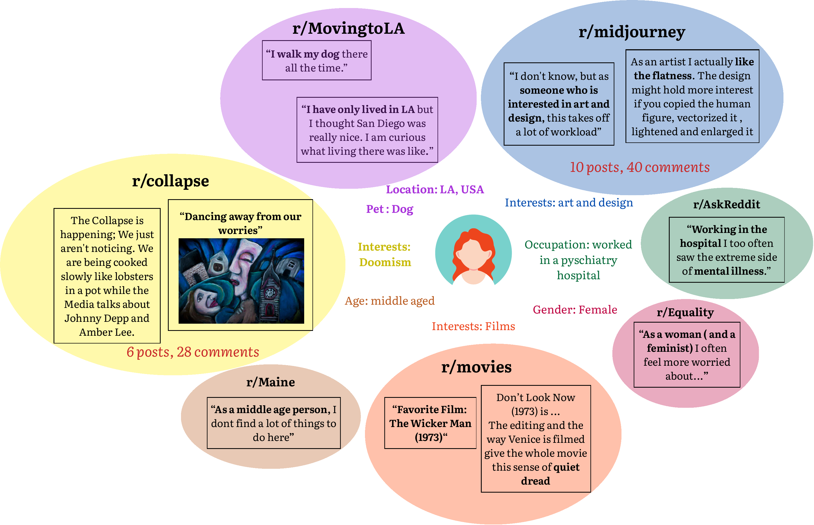
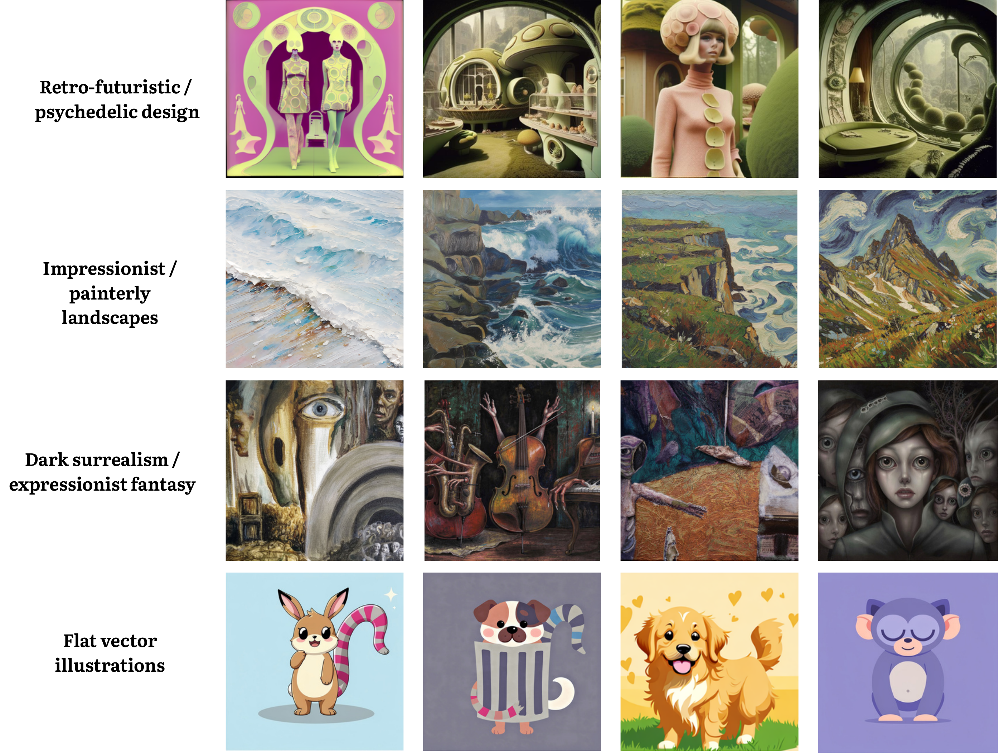
Methods that collapse a user into a fixed style are the most susceptible to pluralistic misalignment. ViPer reuses the same style attributes across all prompts (worst CMMD, 0.55); DrUM anchors generation around a narrow slice of history (0.31); retrieval-based TV (0.25) collapses when the prompt pool is small. ZIPP achieves the lowest CMMD (0.16) while maintaining the highest alignment, because personas encode multi-faceted preference priors — aesthetics, topics, culture, and affect — that modulate generation contextually rather than anchoring on a fixed reference set.
Lower CMMD = better: closer to the user's true spread of visual preferences. ZIPP (0.16) is the clear winner; ViPer (0.55) is the worst.
Preference datasets have historically over-sampled WEIRD (Western, Educated, Industrialized, Rich, Democratic) populations — up to 96% of behavioral-science participants, representing only ~12% of the global population. The same bias has crept into image-personalization benchmarks: most (PIP, HPD, Pick-a-Pic) do not even report demographic distributions, making bias impossible to audit. We use RapidData, where each preference pair is tagged with anonymized group-level demographics, and apply Iterative Proportional Fitting (IPF / raking) to reweight per-subgroup scores so the aggregate reflects true UN population marginals rather than the majority-skewed sample.
Because the evaluation itself is skewed, methods that maximize aggregate scores are the most exposed. Under IPF normalization, DrUM drops the most — collapsing from 75.0 (N. America) to 58.0 (Africa), a 22.7% regional gap, and degrading sharply for older (55+), Latin American, Middle Eastern, and manual-trade users. ZIPP stays within ~1% of its raw score and maintains ≥76.5 CLIPScore across every region, because the LLM reads age- and culture-relevant context directly from the persona regardless of training-data representation. Even zero-shot ZIPP matches or beats trained baselines on underrepresented subgroups. See the Demographic (IPF) tab above for the full raw-vs-IPF breakdown.
We ran a controlled study with 50 demographically diverse participants, building each person's natural-language persona from a short intake survey on demographics, profession, and hobbies (never visual preferences). Each participant made pairwise A/B choices over 20 prompts, yielding 1,000 annotations. Annotators consistently preferred persona-conditioned generations, and a separate expert study confirmed the quality of mined personas.
| ZIPP vs. baseline | ZIPP win % | n |
|---|---|---|
| ZIPP (0-shot) vs. No-Persona | 79% | 250 |
| ZIPP (3-shot) vs. TV (3-shot) | 78% | 125 |
| ZIPP (3-shot) vs. ViPer (FT) | 65% | 250 |
| ZIPP (3-shot) vs. DrUM (FT) | 58% | 250 |
| ZIPP (0-shot) vs. TV (3-shot) | 56% | 125 |
Every comparison exceeds 50% — ZIPP wins against all baselines, including methods that need per-user fine-tuning or 100+ historical prompts. All conditions are significant (p < 0.01, binomial test).
In a second study, three independent expert annotators rated 100 mined personas (~1,000 annotations) on a 1–5 scale. Personas were judged accurate and coherent, with substantial inter-annotator agreement (Cohen's κ = 0.64).
ZIPP rewrites a single base prompt from each persona's perspective, steering the diffusion model toward taste-aligned outputs. Browse the examples below to see the persona, the base prompt, and the rewritten prompt.
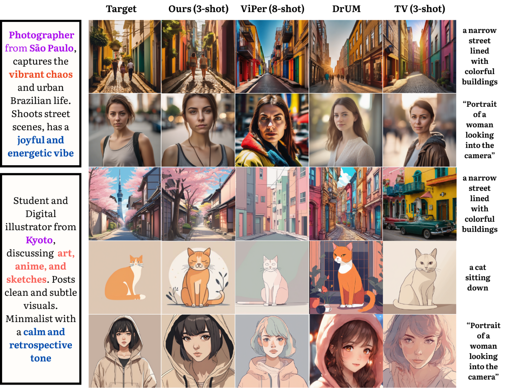
Personas are mined from a Reddit interaction graph spanning 23M users, 40K subreddits, and 682M posts and comments (2015–2022). Below: interactive views of where and who the activity comes from, and how persona attributes map to visual interests.
World map of relative Reddit activity, colored by region and annotated with each region's top visual interest.
US state-level activity with per-state top visual interests; hover for the full interest ranking.
Age and gender distribution of the inferred user population behind the persona graph.
Heatmap relating persona attributes to visual interests, surfacing the strongest taste associations.
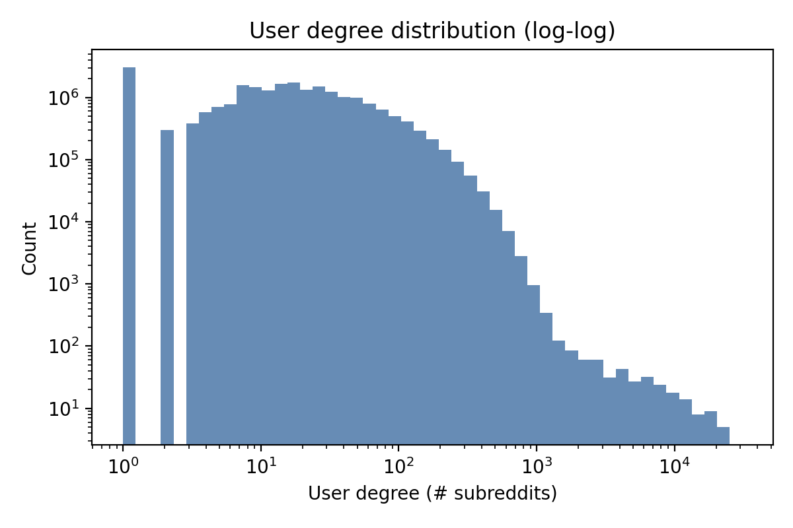
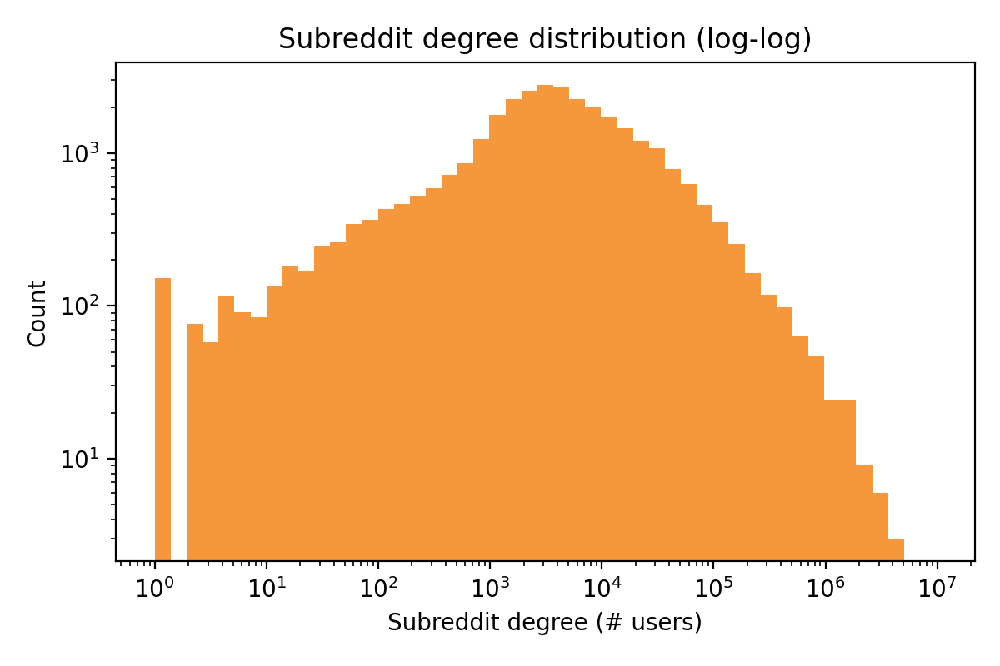
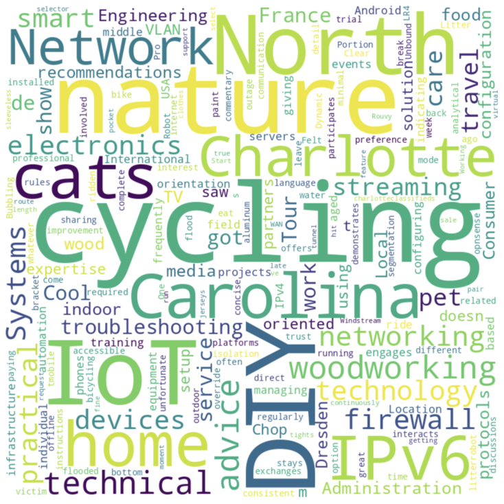
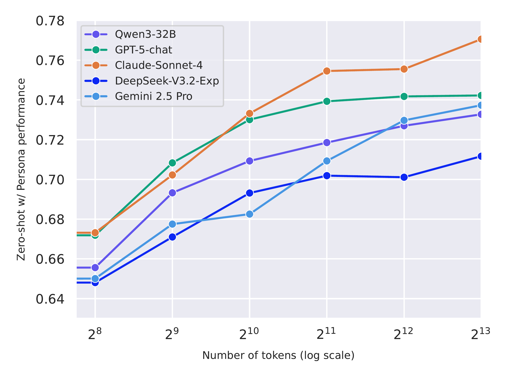
@article{si2026zipp,
title={ZIPP: Zero-shot Image Personalization from Personas},
author={SI, Harini and Singh, Somesh and Singla, Yaman Kumar and Doermann, David and Shah, Rajiv Ratn},
journal={arXiv preprint arXiv:2606.08841},
year={2026}
}